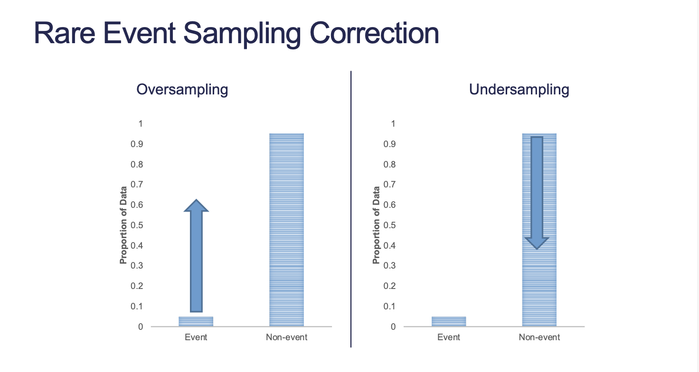
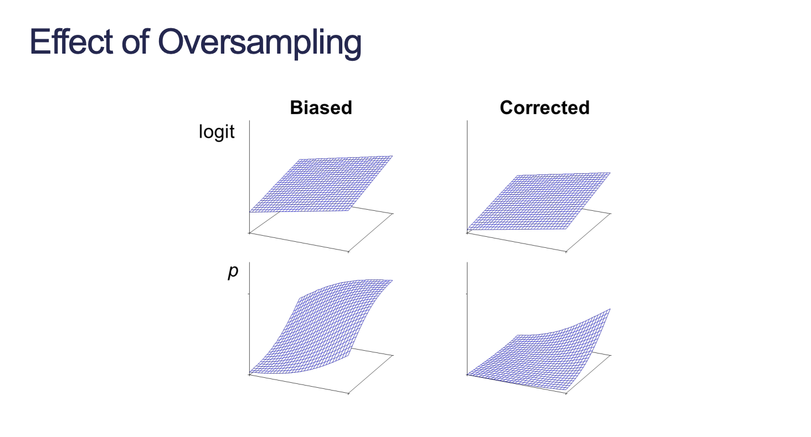
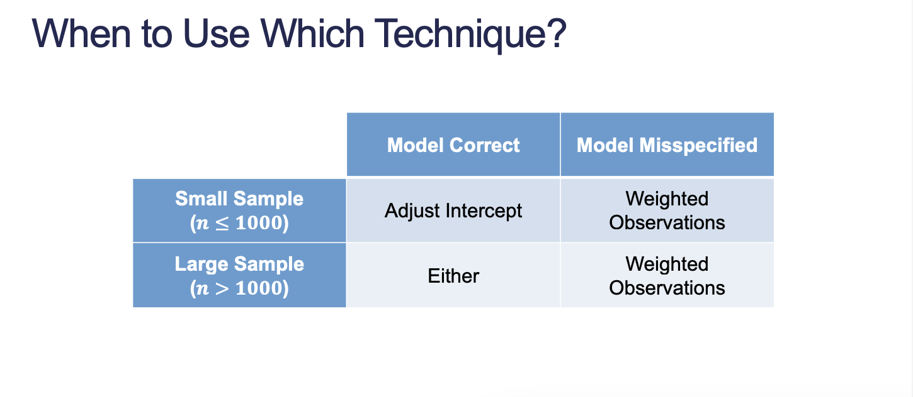
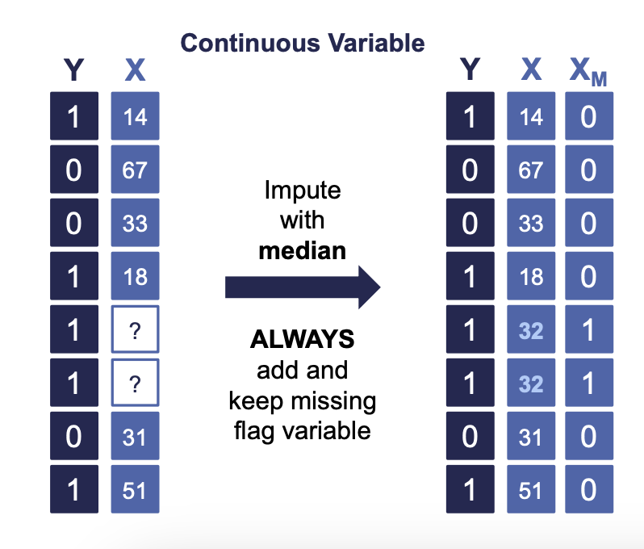
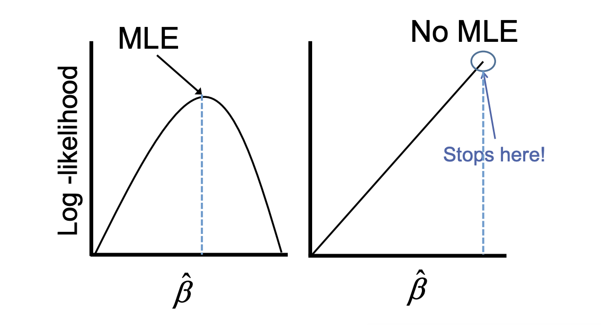
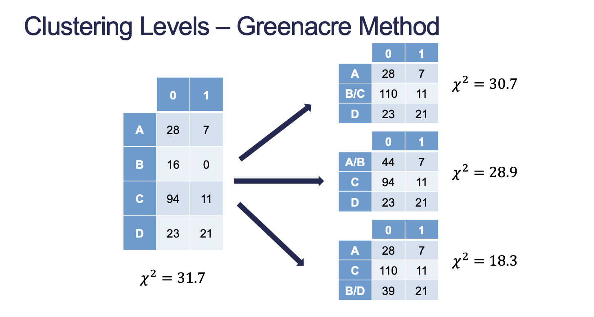

Code
churn <- read.csv("https://raw.githubusercontent.com/IAA-Faculty/statistical_foundations/master/tele_churn.csv")Yang Chen
August 28, 2023
September 15, 2023
The following considerations apply to any binary classification problem.
Many algorithms and models have a problem trying to predict small proportions. 5% or smaller in a target category can lead to classification problems. Common situations include fraud, default, marketing response, weather event.

Can be a problem because we’re “repeating” the signal
library(tidyverse)
set.seed(12345)
train_o <- churn %>%
sample_frac(0.7) %>%
mutate(id = row_number())
# Each positive observation is repeated 10 times
train_o_T <- train_o %>%
filter(churn == TRUE) %>%
slice(rep(1:n(), each = 10))
train_o_F <- train_o %>%
filter(churn == FALSE)
train_o <- rbind(train_o_F, train_o_T)
test_o <- churn[-train_o$id,]
table(train_o$churn)
FALSE TRUE
1996 1070
FALSE TRUE
747 154
Call:
glm(formula = churn ~ factor(international.plan) + factor(voice.mail.plan) +
total.day.charge + customer.service.calls, family = binomial(),
data = train_u)
Coefficients:
Estimate Std. Error z value Pr(>|z|)
(Intercept) -5.81880 0.95939 -6.065 1.32e-09 ***
factor(international.plan)yes 2.97995 0.57057 5.223 1.76e-07 ***
factor(voice.mail.plan)yes -0.85107 0.41372 -2.057 0.0397 *
total.day.charge 0.12898 0.02234 5.773 7.79e-09 ***
customer.service.calls 0.78520 0.14947 5.253 1.50e-07 ***
---
Signif. codes: 0 '***' 0.001 '**' 0.01 '*' 0.05 '.' 0.1 ' ' 1
(Dispersion parameter for binomial family taken to be 1)
Null deviance: 288.35 on 207 degrees of freedom
Residual deviance: 195.24 on 203 degrees of freedom
AIC: 205.24
Number of Fisher Scoring iterations: 5
When sample proportion is out of line with population proportion, we need to adjust to correct the bias.
There are two possible methods:
Need to correct for bias created by oversampling. Adjustment is only applied to intercept. This creates an unbiased estimate of our probabilities.
\[ \hat{p}_i = \frac{\hat{p}_i^*\rho_0\pi_1}{(1 - \hat{p}_i^*)\rho_1 + \hat{p}_i^*\rho_0\pi_1} \]
1 2 3 4 5 6
0.04788873 0.00516951 0.03230002 0.91516214 0.56312205 0.29766875 Weighting observations adjusts while model is being built instead of after it is built.
We use weighted maximum likelihood estimation (MLE) so each observation has potentially different weights to the MLE calculation.
\[ \text{weight} = \begin{cases} 1, & y = 1 \\ \rho_1\pi_0/\rho_0\pi_1, & y = 0 \end{cases} \]
We can think of the 0 as gaining a multiplier of \(\frac{\pi_0}{\pi_1}\) per observation in order to get back to the original population proportion. The weight expressed in the above formula is actually \(\frac{(\pi_0 / \pi_1)}{(\rho_0 / \rho_1)}\)
Call:
glm(formula = churn ~ factor(international.plan) + factor(voice.mail.plan) +
total.day.charge + customer.service.calls, family = binomial(),
data = train_u, weights = weight)
Coefficients:
Estimate Std. Error z value Pr(>|z|)
(Intercept) -9.76831 0.69648 -14.025 < 2e-16 ***
factor(international.plan)yes 3.33560 0.32429 10.286 < 2e-16 ***
factor(voice.mail.plan)yes -1.07451 0.27107 -3.964 7.37e-05 ***
total.day.charge 0.16320 0.01647 9.911 < 2e-16 ***
customer.service.calls 0.72693 0.08810 8.251 < 2e-16 ***
---
Signif. codes: 0 '***' 0.001 '**' 0.01 '*' 0.05 '.' 0.1 ' ' 1
(Dispersion parameter for binomial family taken to be 1)
Null deviance: 820.31 on 207 degrees of freedom
Residual deviance: 585.33 on 203 degrees of freedom
AIC: 590.92
Number of Fisher Scoring iterations: 6We actually get difference significant variables between the adjusted intercept model and the weighted model. When do we use which technique? For the most part, we use weighted.

When you build a model, observations with missing values are typically dropped. This is referred to as complete case analysis. However, this can result in losing a lot of data that could be useful.
Solutions to missing values:
If a majority of your data is missing, then consider deleting the variable all together.
More than 50% missing is a good rule of thumb for removing the variable. We may not be confident that the data we do have is good.
Missing values in predictor variables are not necessarily bad. For categorical variables we can add a missing category.
We can estimate a missing value with imputation. Not best to do with categorical variables as you can just add a missing category.
Approaches:
If you impute missing continuous values then you need to create a missing value binary flag for each of the continuous variables you impute.

Any operations you apply to your training data need to be applied to your test data as well. Early on you should consider creating a pipeline that can apply the transforms you used on the test data when it comes to evaluation.
Problems with linear separation have to be considered for categorical variables.
Complete linear separation occurs when some combination of the predictors perfectly predict every outcome.
| Yes | No | |
|---|---|---|
| Group A | 100 | 0 |
| Group B | 0 | 150 |
Quasi-complete separation occurs when the outcome can be perfectly predicted for only a subset of the data. In this case, Group B is perfectly predicting the No category.
| Yes | No | |
|---|---|---|
| Group A | 77 | 23 |
| Group B | 0 | 50 |

| Customer Service Calls | Sample Size | 0 | 1 |
|---|---|---|---|
| 0 | 54 | 29 | 25 |
| 1 | 59 | 34 | 25 |
| 2 | 43 | 23 | 20 |
| 3 | 27 | 15 | 12 |
| 4 | 15 | 2 | 13 |
| 5 | 5 | 1 | 4 |
| 6 | 3 | 0 | 3 |
| 7 | 2 | 0 | 2 |
Group 4 - 7 categories together:
| Customer Service Calls | Sample Size | 0 | 1 |
|---|---|---|---|
| 0 | 54 | 29 | 25 |
| 1 | 59 | 34 | 25 |
| 2 | 43 | 23 | 20 |
| 3 | 27 | 15 | 12 |
| 4+ | 25 | 3 | 22 |

We select the clustering which results in the least amount of information lost from our original counts. In this case we group B and C together.